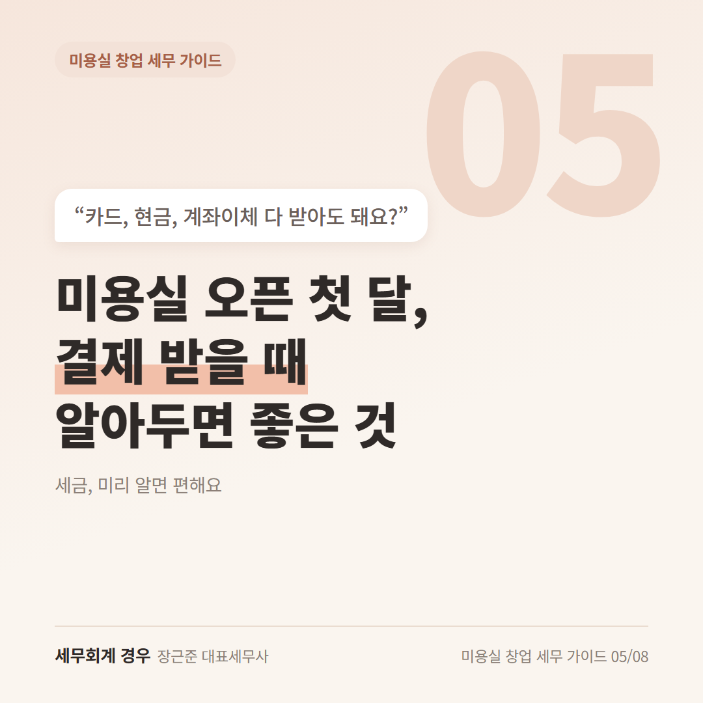
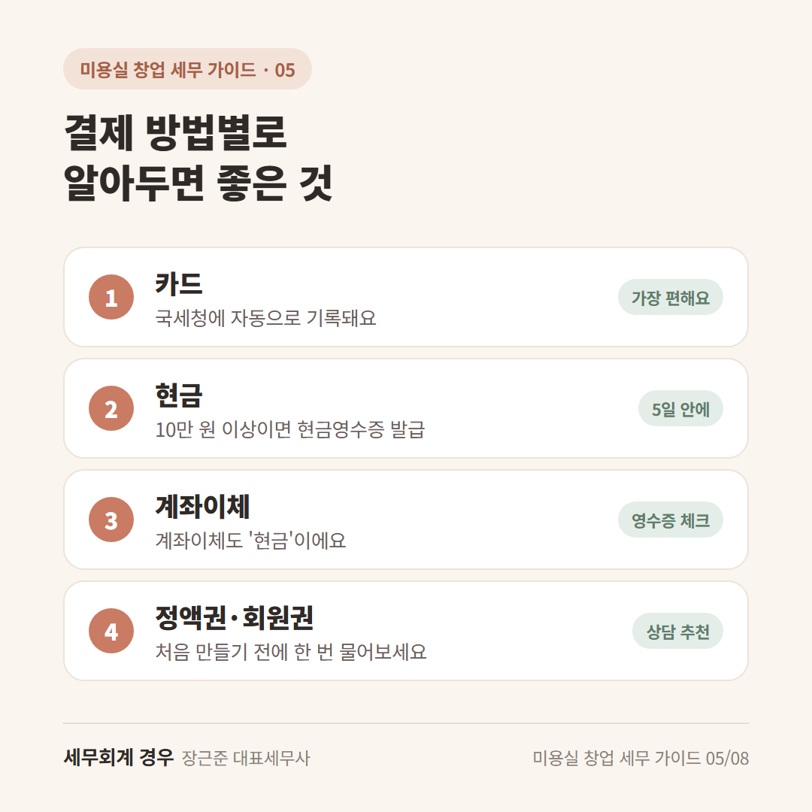
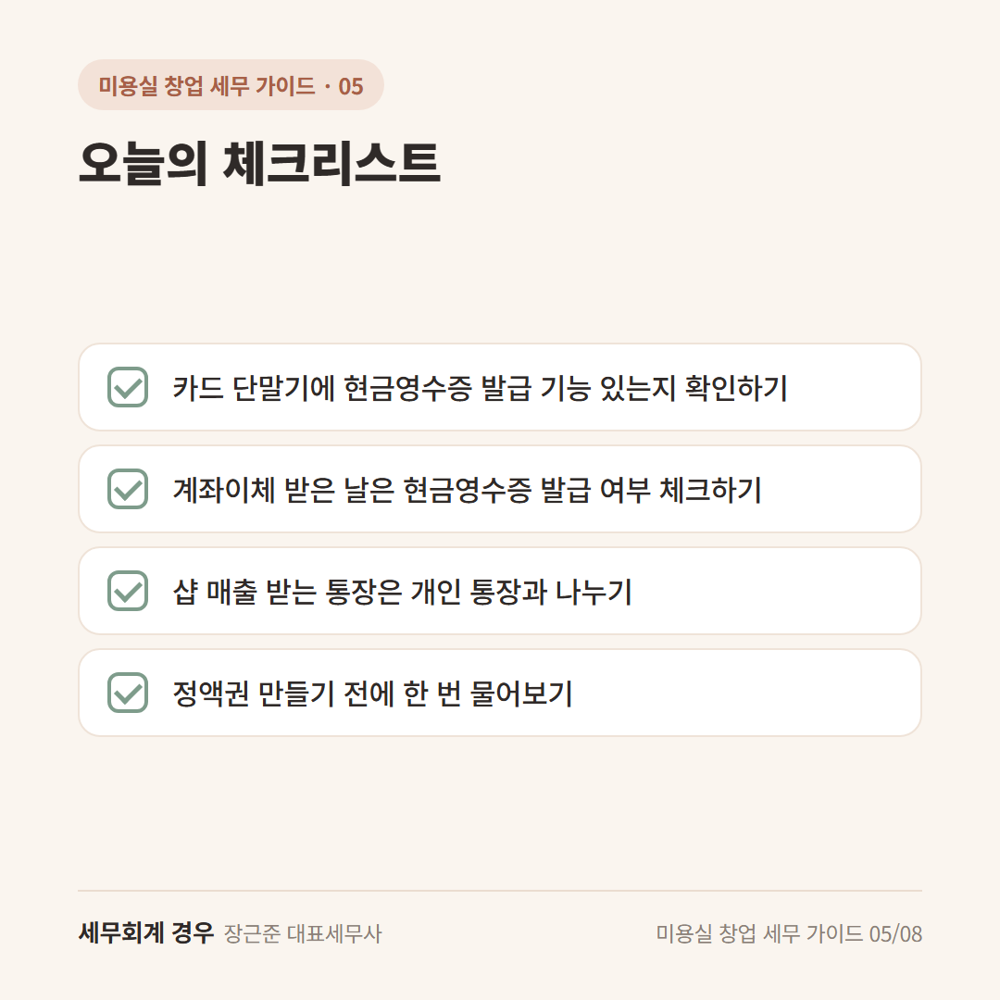

미용실 창업 세무 가이드 · 5번째 글
미용실 오픈 첫 달, 결제 받을 때 알아두면 좋은 것

드디어 오픈! 첫 손님 머리를 끝내고 카운터에 섰는데
손님이 "계좌이체 해도 돼요?" 하고 물어보세요.
카드, 현금, 계좌이체 다 받으셔도 돼요.
다만 미용실은 현금영수증에 한 가지 알아둘 점이 있어요.
1. 카드 결제: 받으면 자동으로 기록돼요
카드로 받은 매출은 국세청에 자동으로 기록돼요.
원장님이 따로 할 일이 거의 없어서 가장 편한 방법이에요.
카드 수수료는 샵에서 쓴 돈으로 들어가니, 카드사 정산 내역도 챙겨두세요.
한 가지만 기억하세요.
카드 결제를 거절하거나, 카드라서 돈을 더 받는 건 안 돼요.
"현금이면 할인" 안내도 오해가 생길 수 있으니 조심하는 게 좋아요.
2. 현금·계좌이체: 미용실은 현금영수증을 챙겨야 해요
미용실은 현금영수증을 꼭 발급해야 하는 업종이에요.
그래서 10만 원 이상을 현금으로 받으면, 손님이 말하지 않아도 발급해야 해요.
여기서 계좌이체도 "현금"이에요.
펌, 염색, 클리닉처럼 금액이 큰 시술은 특히 챙겨주세요.
손님이 번호를 알려주지 않으면
국세청이 정한 번호(010-000-1234)로 발급하면 돼요.
보통 돈을 받은 날부터 5일 안에 발급해야 해요.
10만 원이 안 되더라도 손님이 원하시면 발급해드리면 돼요.
3. 정액권·회원권은 따로 물어보세요
"10회권", "30만 원 충전하면 3만 원 더" 같은 정액권 파는 샵 많죠?
정액권은 매출을 언제 잡을지, 영수증을 언제 줄지가 상황마다 달라요.
처음 만들기 전에 상담으로 확인하시는 게 좋아요.
일단은 판매한 날짜, 금액, 남은 횟수를 손님별로 적어두세요.
이 기록만 있어도 나중에 정리하기가 훨씬 편해요.

오늘의 체크리스트

- 카드 단말기에 현금영수증 발급 기능 있는지 확인하기
- 계좌이체 받은 날은 현금영수증 발급 여부 체크하기
- 샵 매출 받는 통장은 개인 통장과 나누기
- 정액권 만들기 전에 한 번 물어보기
자주 묻는 질문
계좌이체로 받은 돈도 매출로 신고해야 하나요?
네, 계좌이체도 매출이에요. 통장에 기록이 남으니 카드 매출과 똑같이 신고에 넣으시면 돼요.
현금영수증은 어떻게 발급해요?
카드 단말기나 포스기에서 발급할 수 있어요. 손택스(국세청 앱)에서도 발급할 수 있어요.
마무리
미용실 현금영수증은 "계좌이체도 현금"이라는 것만 기억하셔도 절반은 끝이에요.
오픈 첫 달에 결제 방식을 한 번 정리해두면 신고할 때 훨씬 편해요.
헷갈리는 부분은 오픈 전에 한 번 편하게 물어보세요.
개인 상황에 따라 달라질 수 있으니 자세한 내용은 상담으로 확인하세요.